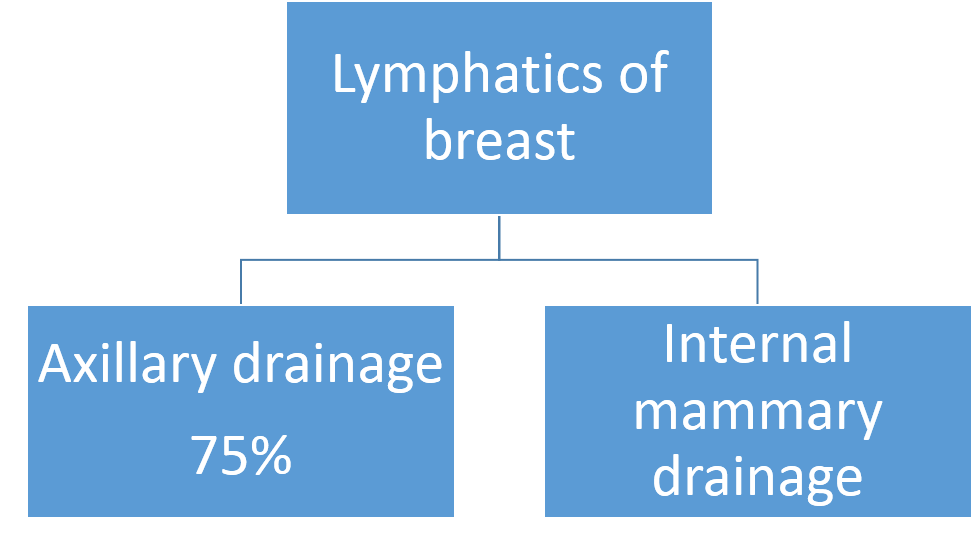
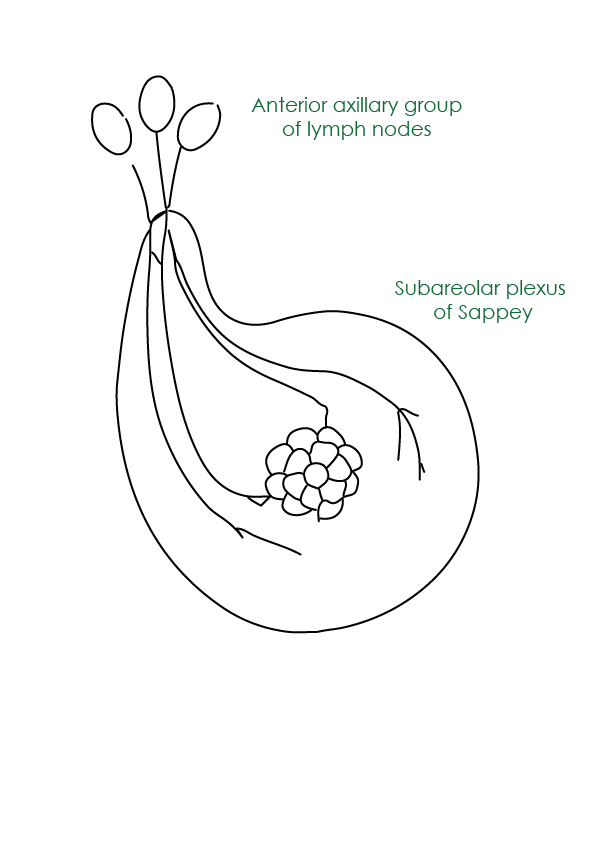
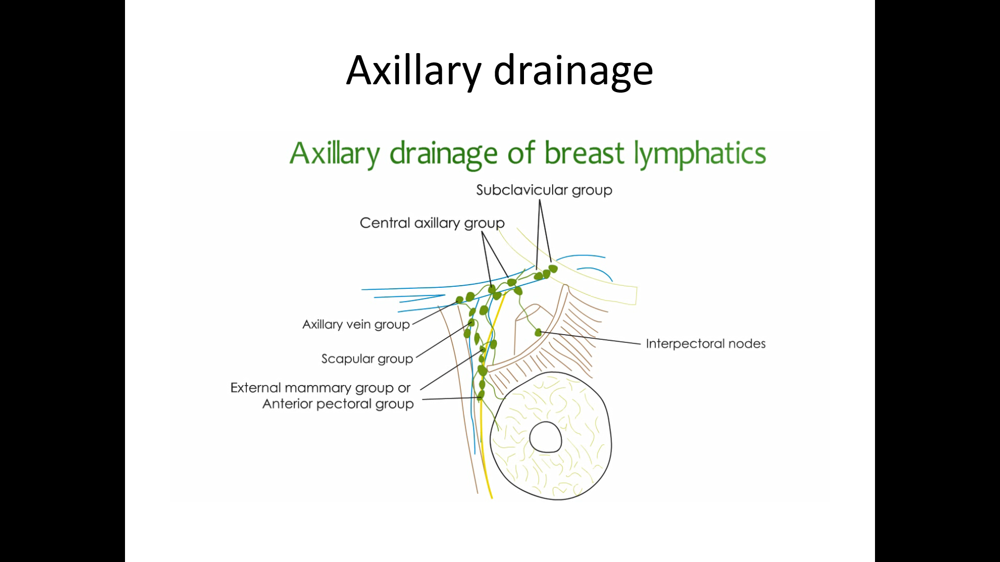
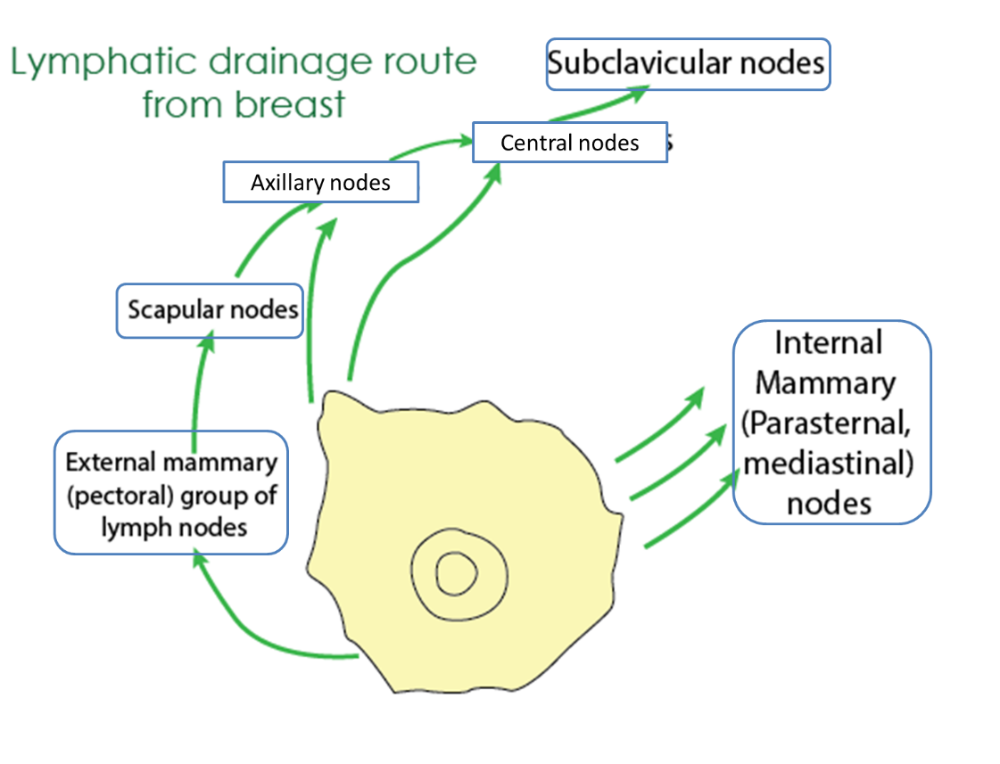
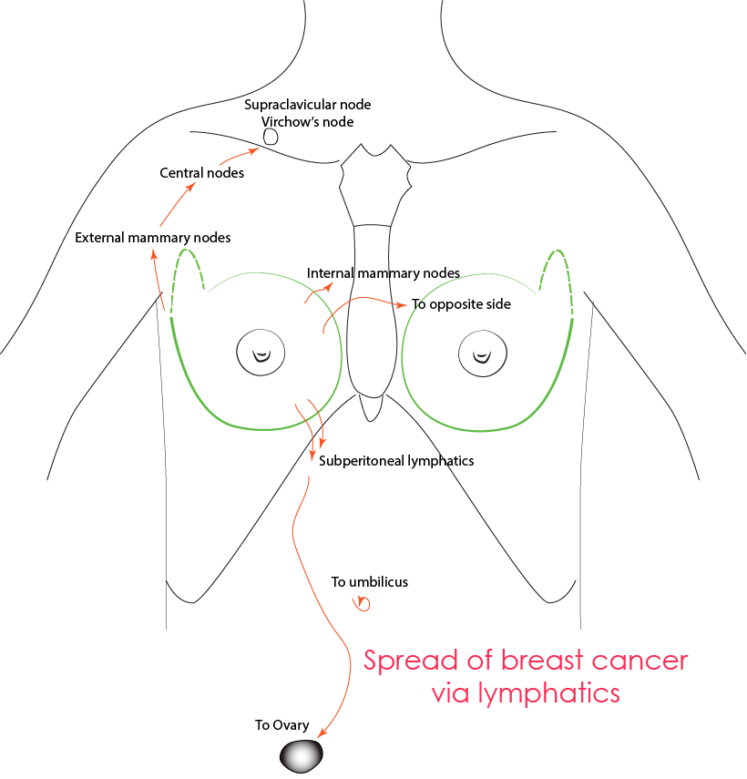
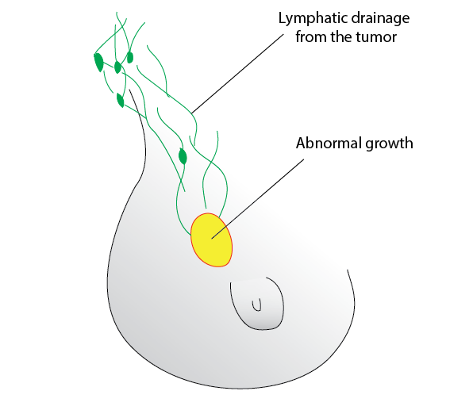
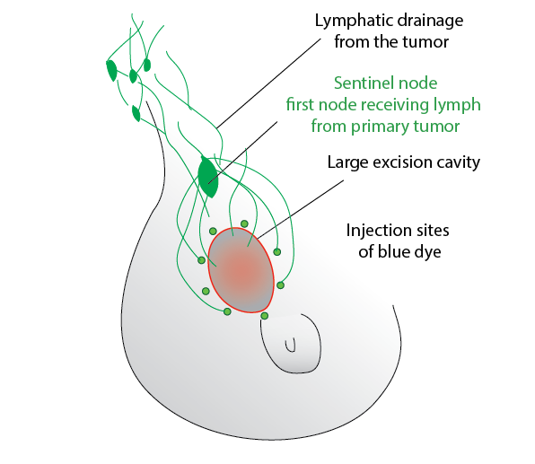

Lymphatic drainage of breast

Axillary drainage
Axillary group of lymph nodes
Anterior pectoral group (external mammary group)
Along lateral border of pectoralis minor
Deep to pectoralis major
Along medial side of lateral thoracic artery from 2nd to 6th rib
Deep to areola – extensive plexus of lymphatics present
Called Subareolar plexus of Sappey
Pass around the lateral border of pectoralis major to reach external mammary group.

Scapular nodes (posterior group)
lie on the subscapular vessels and their thoracodorsal branches
Intercommunicate with intercostal lymph nodes
Central nodes
largest group of lymph nodes
they can be easily palpable in axilla
embedded in fat in the centre of the axilla
When these nodes enlarge, they can compress the intercostobrachial nerve, the lateral cutaneous branch of the second or third thoracic nerve that results in pain
Interpectoral nodes (Rotter's nodes)
lie between the pectoralis major and minor muscles
Axillary vein nodes (lateral group)
lie on the caudal and ventral surfaces of the lateral part of the axillary vein
Subclavicular nodes (apical group)
lie on the caudal and ventral surfaces of the medial part of the axillary vein
Inaccessible unless Pectoralis major is sacrificed

Axillary lymph nodes can be divided into surgical levels:
level 1: lying below pectoralis minor
level 2: lying behind pectoralis minor
level 3: lying between the upper border of pectoralis minor and lower border of the clavicle
Level 1
Level 3
Level 2
Internal mammary group of lymph nodes
Located on medial edge of the breast on the pectoralis fascia
accompany the perforating blood vessels
also receive lymphatic trunks from the skin of the opposite breast, the liver, the diaphragm, the rectus sheath, and the upper part of the rectus abdominis
This route to the venous system is shorter than the axillary route
Drainage route
In general lymphatic from breast accompany blood vessels
Spread of tumor will be to lower axilla first, then to middle axilla before reaching upper axilla

Applied aspects
Spread of breast cancer
Lymphatic metastasis occurs primarily to the axillary and the internal mammary lymph nodes.
Tumours in the posterior one-third of the breast are more likely to drain to the internal mammary nodes.
Spread by the bloodstream - initial spread may be via the lymphatic system.
In order of frequency the lumbar vertebrae, femur, thoracic vertebrae, rib and skull
Metastases may also commonly occur in the liver, lungs and brain

Sentinel node
First site of metastic disease
It is the first node receiving lymph from primary tumor
Detected using blue- dye and gamma camera

After the excision of an abnormal growth from breast

Blue dye is injected to its walls and first node receiving the dye is observed using gamma camera